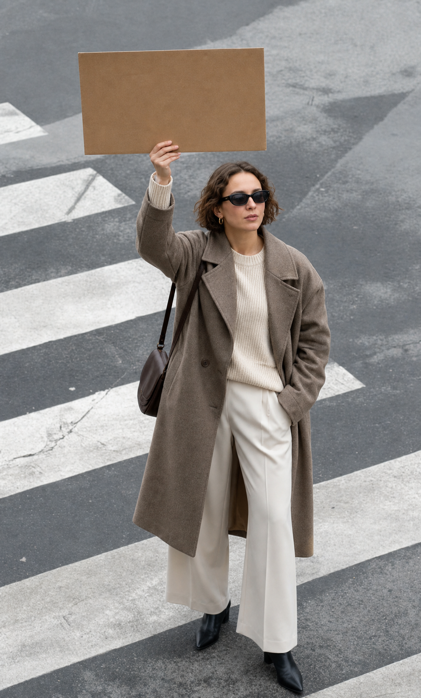

Warm, candid, real. Golden-hour street & portrait photography of women — laughing, walking, holding signs ("Money is Power"). Slight grain. Never stock-photo finance imagery (handshakes, charts, glass towers).